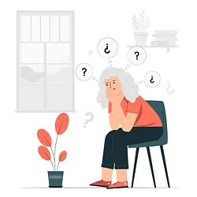

Nutrition Diet based on your Voice Analysis
Your Body is the best indicator of your Health status and it speaks to you through your Voice to communicate the Deficiencies based on the Vibrations detected by Jv-scan. Our Research has led the Dietitians of our Team to subdivide their Diet Plans based on Missing frequencies detected.
ORGAN BASED DIETS

Organ Based Diets
For Organs at Risk
There is a specific function for every organ in the body, but stress, food, and everyday living can compromise their effectiveness. For Instance : Arthritis is a progressive disease, its symptoms can lead to organ damage. The liver, kidneys, and intestine help your body eliminate waste and absorb nutrients. If your liver or kidneys are overloaded, waste accumulates. Toxins in the body are perceived as a threat by the immune system, causing inflammation in the body.
THE SCIENCE BEHIND
The Human Body is represented by Vibrations which are defined as Frequencies and Measured in HERTZ Each organ has an operating frequency, and the unique algorithm of Jv-scan can detect these Frequencies even at the quantum level. Integrating Nutrition Diet plans for the First Time based on the detection/evaluation of missing Frequencies in your Body at the Organ level. If the Vibrations of an Organ or a System are as weak as the Normal Vibrations, the algorithm picks up those and recommends Diet plans to strengthen the affected Organs or Systems with Vitamins, Amino Acids, and other elements that are required for the Proper Functioning of that Organ/Organs.
BENEFITS
Customized Organ based Diet Plans Bulls Eye Effect Action Brings a state of harmony with replenishment of frequencies in the form of Diet and Nutrition Brings the organ in a balanced state by replenishing the Missing Diet Elements Creating a state of Balance at Mind, Blood, Body
CHAKRA BASED DIETS
CHAKRA BASED DIETS
To Strengthen your Each Chakra Separately
Chakras are circular centers of energy responsible for the sustenance of life.
They act as both receivers and transmitters of energy and are connected to the human
mind at the quantum level and are therefore the points of disease creation when
imbalanced.
Our body has seven main chakras – where the main glands are located from head to toe
– and seven primary colors. Each chakra in the body is interconnected to the others,
and the health of each is reflected in the health of the others. Add certain foods
to your diet, and use certain colors in your environment and appearance to achieve
overall healthy living.
The Human Body has 7 Major chakras and 22,000 Minor Chakras on each side of the body
Each Chakra is shaped like a flower and has a particular number of petals that
resonate at a particular frequency range to transmit energy from the mind into the
body and thus responsible for the flow of energy called life.
Types of plans
we offer 7 types of Diet plans Namely:
- Root Chakra diet Plan
- Sacral Chakra Diet Plan
- Solar Plexus Chakra Diet Plan
- Heart Chakra Diet Plan
- Throat Chakra Diet Plan
- Brow Chakra Diet Plan
- Crown Chakra Diet Plan
HOW IT WORKS?
As worked out by our expert Dieticians, the Diet plans contain precisely the Nutrients required by each Chakra for their Normal Functioning at the Quantum level. As recommended by Jv-Scan Algorithm, one can plan a diet plan to Realign their Chakras and thus Create oneness in Consciousness at the Quantum level for the Body to Heal Related products
EMOTION BASED DIETS
Emotion BASED DIETS
For Depression or any negative emotional states
Emotional eating involves using food as a way to feel better rather than to fill your stomach. But emotional eating does little to help solve emotional problems. In most cases, it makes things worse. A well-researched diet after identifying real problem works effectively and brings calmness.
Types of plans
Our Dieticians have come up with special Diet plans based on your emotional states.
These are:
- Diet Plans for Stress
- Diet Plans for Anxiety
- Diet Plans for Depression
- Diet Plans for Anger issues
- Diet Plans for Grief
HOW THEY WORK ?
The Unique Algorithm of Jv-Scan Identifies these Emotions when u record your voice for just 30 seconds. Each emotion passes through various stages in the mind to spill into the blood to bring about Dietary deficiencies which further lead to ill health at the level of the Body Balancing your Mind Body soul with the nutrients identified by Jv-Scan Algorithm is the key here.
ISSUE BASED DIETS
ISSUE BASED DIETS
The human body requires a broad range of nutrients to maintain health and vitality.
Good nutrition or eating in accordance with the body’s nutritional needs is
essential to providing these nutrients. The cornerstone of good health is a balanced
diet and regular exercise. Nutritional deficiencies can result in weakened immunity,
increased susceptibility to disease, impairments of physical and mental development,
and decreased productivity.
While a Disease Progresses from the Mind into the body, certain repetitive behavior
patterns are created, which the person holds for a long time unless a timely
intervention is made effective.
These Issues can be many, and we at Jv-Scan Address them differently through Diet
plans.
What are Issue-based Plans?
Weight loss Diet
Hair Growth Diet
Energy Boost Diet
Anti Aging Diet
HOW THEY WORK ?
The Jv-Scan Algorithm detects not only these behavioral patterns but also other factors responsible and creates a database for each starting from Root cause to its further progression with deficiencies of
- Neurotransmitters
- Hormones
- Amino acids
- Vitamins etc
To Formulate a Diet plan which is customized and replaces all Elements as described to give you freedom from the Issue if used Regularly.